GO 對戰聯盟盃賽 · CP 1,500
超級速成盃：超級聯盟版推薦排名
超級速成盃只能派出這一季抓到的寶可夢，考驗的是這季有沒有把握機會抓到好用的寶可夢、並把牠養起來。這份榜單依 PvPoke 對戰模擬的分數排序，列出前 100 名寶可夢與推薦招式；想知道你手上那隻的 IV 排第幾，點右邊的「查 IV」直接帶入。
- 資料更新 2026-11-08
- 收錄 995 隻・顯示前 100 名
- 本季開放時間
- 限定 限定招式
參賽規則
- 寶可夢 CP 必須在 1,500 以下。
- 可以使用超級進化寶可夢。
- 僅限使用「黃昏之旅」賽季期間（2026/9/9 04:00～12/2 05:00，台灣時間）捕捉到的寶可夢。
- 不可使用幻之寶可夢。
⚠ PvPoke 沒辦法判斷捕捉日期，這份排名是假設本季能捕捉到的寶可夢都能參賽，而且沒有包含超級進化寶可夢；請以自己本季實際抓到的寶可夢為準。
 1禿鷹娜惡飛行94.8一般大聲咆哮特殊惡之波動燕返查 IV
1禿鷹娜惡飛行94.8一般大聲咆哮特殊惡之波動燕返查 IV 2烏賊王暗影惡超能力91.7一般精神波特殊欺詐蠻力查 IV
2烏賊王暗影惡超能力91.7一般精神波特殊欺詐蠻力查 IV 3莫魯貝可（滿腹花紋）電惡91.1一般電擊特殊氣場輪精神之牙查 IV
3莫魯貝可（滿腹花紋）電惡91.1一般電擊特殊氣場輪精神之牙查 IV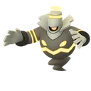
4黑夜魔靈暗影幽靈90.5一般驚嚇特殊爆裂拳暗影拳查 IV- 5土王毒地面90.2一般毒針特殊地震污泥炸彈查 IV
 6流氓熊貓格鬥惡90.2一般空手劈特殊近身戰暗襲要害查 IV
6流氓熊貓格鬥惡90.2一般空手劈特殊近身戰暗襲要害查 IV 7豪力暗影格鬥90.1一般空手劈特殊十字劈限定爆裂拳查 IV
7豪力暗影格鬥90.1一般空手劈特殊十字劈限定爆裂拳查 IV- 8烏賊王惡超能力90.1一般精神波特殊蠻力欺詐查 IV
 9龍王蠍暗影毒惡89.7一般毒針特殊咬碎水流尾查 IV
9龍王蠍暗影毒惡89.7一般毒針特殊咬碎水流尾查 IV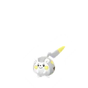
10托戈德瑪爾電鋼89.6一般電擊特殊致命針刺瘋狂伏特查 IV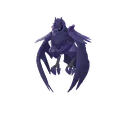
11鋼鎧鴉飛行鋼89.5一般潑沙特殊神鳥猛擊鐵頭限定查 IV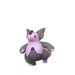
12噗噗豬超能力89.1一般精神波特殊爆裂拳暗影球查 IV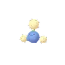
13毽子棉草飛行89.0一般妖精之風特殊燕返能量球查 IV 14火爆猴格鬥88.8一般空手劈限定特殊憤怒之拳限定近身戰查 IV
14火爆猴格鬥88.8一般空手劈限定特殊憤怒之拳限定近身戰查 IV 15勾魂眼惡幽靈88.6一般暗影爪特殊欺詐魔法閃耀查 IV
15勾魂眼惡幽靈88.6一般暗影爪特殊欺詐魔法閃耀查 IV 16火焰鳥（伽勒爾）惡飛行88.4一般突襲特殊原始之力勇鳥猛攻查 IV
16火焰鳥（伽勒爾）惡飛行88.4一般突襲特殊原始之力勇鳥猛攻查 IV 17棄世猴暗影格鬥幽靈88.1一般雙倍奉還特殊憤怒之拳限定冰凍拳查 IV
17棄世猴暗影格鬥幽靈88.1一般雙倍奉還特殊憤怒之拳限定冰凍拳查 IV
18太陽珊瑚（伽勒爾）幽靈88.1一般驚嚇特殊黑夜魔影力量寶石查 IV- 19黑夜魔靈幽靈87.9一般驚嚇特殊爆裂拳暗影拳查 IV
- 20掘地兔一般地面87.7一般電光一閃特殊火焰拳熱沙大地查 IV
- 21大力鱷水87.7一般暗影爪特殊加農水砲限定冰凍光束查 IV
- 22火爆猴暗影格鬥87.7一般空手劈限定特殊憤怒之拳限定近身戰查 IV
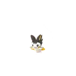
23電飛鼠電飛行87.6一般電擊特殊雜技放電查 IV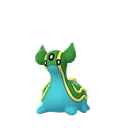
24海兔獸水地面87.6一般擲泥特殊泰山壓頂大地之力查 IV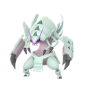
25具甲武者蟲水87.6一般暗影爪特殊十字剪水流噴射查 IV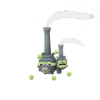
26雙彈瓦斯（伽勒爾）暗影毒妖精87.6一般妖精之風特殊污泥攻擊狂舞揮打查 IV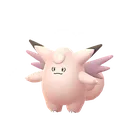
27皮可西妖精87.4一般妖精之風特殊月亮之力高速星星查 IV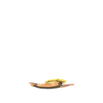
28泥巴魚地面電87.4一般電擊特殊泥巴炸彈放電查 IV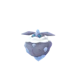
29小碎鑽岩石妖精87.3一般落石特殊力量寶石月亮之力查 IV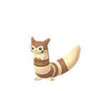
30大尾立一般87.3一般突襲特殊高速星星起草查 IV- 31龍王蠍毒惡87.2一般毒針特殊咬碎水流尾查 IV
 32怪力暗影格鬥87.2一般空手劈限定特殊十字劈尖石攻擊限定查 IV
32怪力暗影格鬥87.2一般空手劈限定特殊十字劈尖石攻擊限定查 IV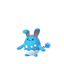
33瑪力露麗水妖精87.1一般泡沫特殊冰凍光束嬉鬧查 IV- 34拉普拉斯水冰87.1一般精神波特殊泡影詠歎調火箭頭錘查 IV
- 35噗噗豬暗影超能力86.9一般精神波特殊爆裂拳暗影球查 IV
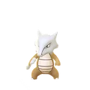
36嘎啦嘎啦地面86.9一般擲泥特殊骨棒岩崩查 IV- 37胖嘟嘟水幽靈86.8一般禍不單行特殊衝浪暗影球查 IV
 38狐大盜惡86.7一般突襲特殊暗襲要害嬉鬧查 IV
38狐大盜惡86.7一般突襲特殊暗襲要害嬉鬧查 IV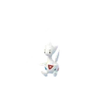
39波克基古妖精飛行86.7一般妖精之風特殊精神衝擊魔法閃耀查 IV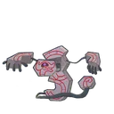
40死神板地面幽靈86.5一般暗影爪特殊岩石封鎖暗影球查 IV 41念力土偶地面超能力86.4一般擲泥特殊岩石封鎖冰凍光束查 IV
41念力土偶地面超能力86.4一般擲泥特殊岩石封鎖冰凍光束查 IV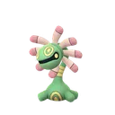
42搖籃百合岩石草86.3一般種子機關槍特殊岩石封鎖打草結查 IV- 43怪力格鬥86.3一般空手劈限定特殊十字劈尖石攻擊限定查 IV
- 44沼王水地面86.3一般泥巴射擊特殊水流尾限定尖石攻擊查 IV
- 45嘎啦嘎啦暗影地面86.2一般擲泥特殊骨棒岩崩查 IV
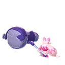
46巨鍛匠妖精鋼86.2一般妖精之風特殊嬉鬧重踏查 IV 47甲賀忍蛙水惡86.0一般飛水手裡劍特殊加農水砲限定暗襲要害查 IV
47甲賀忍蛙水惡86.0一般飛水手裡劍特殊加農水砲限定暗襲要害查 IV- 48水箭龜水85.9一般滾動特殊加農水砲限定火箭頭錘查 IV
- 49彷徨夜靈幽靈85.8一般禍不單行特殊冰凍拳暗影拳查 IV
- 50彷徨夜靈暗影幽靈85.5一般禍不單行特殊冰凍拳暗影拳查 IV
- 51頑皮雷彈（洗翠）電草85.4一般電擊特殊瘋狂伏特高速星星查 IV
- 52雷吉斯奇魯鋼85.4一般鎖定特殊真氣彈電磁炮限定查 IV
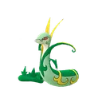
53君主蛇草85.4一般藤鞭特殊瘋狂植物限定燕返查 IV 54恰雷姆格鬥超能力85.2一般精神利刃特殊冰凍拳爆裂拳查 IV
54恰雷姆格鬥超能力85.2一般精神利刃特殊冰凍拳爆裂拳查 IV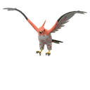
55烈箭鷹火飛行85.2一般燒盡限定特殊飛翔勇鳥猛攻查 IV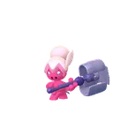
56巧鍛匠妖精鋼85.2一般妖精之風特殊嬉鬧加農光炮查 IV- 57雙彈瓦斯（伽勒爾）毒妖精85.2一般妖精之風特殊污泥攻擊狂舞揮打查 IV
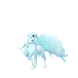
58九尾（阿羅拉）暗影冰妖精85.1一般細雪特殊氣象球 冰魔法閃耀查 IV 59花岩怪幽靈惡85.1一般突襲特殊岩石封鎖暗影球查 IV
59花岩怪幽靈惡85.1一般突襲特殊岩石封鎖暗影球查 IV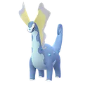
60冰雪巨龍岩石冰85.0一般細雪特殊氣象球 冰流星光束查 IV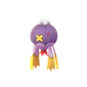
61隨風球幽靈飛行85.0一般禍不單行特殊冰凍之風暗影球查 IV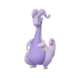
62黏美龍龍85.0一般龍息特殊水流尾雷電拳限定查 IV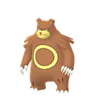
63圈圈熊暗影一般85.0一般暗影爪特殊高速星星近身戰查 IV 64下石鳥飛行惡84.9一般突襲特殊飛翔岩石封鎖查 IV
64下石鳥飛行惡84.9一般突襲特殊飛翔岩石封鎖查 IV- 65大鋼蛇鋼地面84.9一般雷電牙特殊精神之牙廣域破壞查 IV
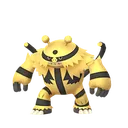
66電擊魔獸暗影電84.8一般電擊特殊冰凍拳瘋狂伏特查 IV 67雙首暴龍惡龍84.8一般龍息特殊惡之波動泰山壓頂查 IV
67雙首暴龍惡龍84.8一般龍息特殊惡之波動泰山壓頂查 IV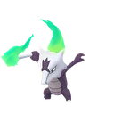
68嘎啦嘎啦（阿羅拉）火幽靈84.7一般火焰旋渦特殊骨棒暗影之骨限定查 IV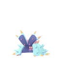
69超壞星毒水84.7一般毒擊特殊鹽水污泥波查 IV- 70九尾（阿羅拉）冰妖精84.5一般細雪特殊氣象球 冰魔法閃耀查 IV
 71千針魚（洗翠）惡毒84.5一般毒針特殊水流尾暗影球查 IV
71千針魚（洗翠）惡毒84.5一般毒針特殊水流尾暗影球查 IV- 72水箭龜暗影水84.4一般滾動特殊加農水砲限定火箭頭錘查 IV
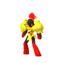
73紅蓮鎧騎火超能力84.3一般燒盡特殊精神衝擊蓄能焰襲查 IV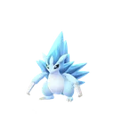
74穿山王（阿羅拉）冰鋼84.3一般細雪特殊冰凍拳直衝鑽查 IV 75鱗甲龍龍格鬥84.2一般龍尾特殊龍爪劈瓦查 IV
75鱗甲龍龍格鬥84.2一般龍尾特殊龍爪劈瓦查 IV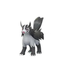
76大狼犬暗影惡84.2一般突襲特殊咬碎劇毒牙查 IV- 77穿山王（阿羅拉）暗影冰鋼84.2一般細雪特殊冰凍拳直衝鑽查 IV
- 78隨風球暗影幽靈飛行84.1一般禍不單行特殊冰凍之風暗影球查 IV
- 79棄世猴格鬥幽靈84.0一般雙倍奉還特殊憤怒之拳限定近身戰查 IV
- 80鯰魚王暗影水地面84.0一般泥巴射擊特殊泥巴炸彈熱水查 IV
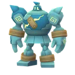
81泥偶巨人地面幽靈83.9一般擲泥特殊暗影拳爆裂拳查 IV- 82花潔夫人妖精83.8一般妖精之風特殊月亮之力起草查 IV
 83烈腿蝗蟲惡83.8一般突襲特殊十字剪起草查 IV
83烈腿蝗蟲惡83.8一般突襲特殊十字剪起草查 IV- 84圈圈熊一般83.8一般暗影爪特殊高速星星近身戰查 IV
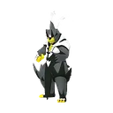
85武道熊師（一擊流）格鬥惡83.8一般突襲特殊劈瓦爆裂拳查 IV- 86冰雪巨龍暗影岩石冰83.7一般細雪特殊氣象球 冰流星光束查 IV
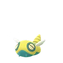
87土龍弟弟一般83.7一般滾動特殊直衝鑽岩崩查 IV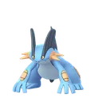
88巨沼怪暗影水地面83.6一般泥巴射擊特殊加農水砲限定污泥攻擊查 IV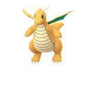
89快龍龍飛行83.5一般龍息特殊龍爪蠻力查 IV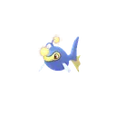
90電燈怪水電83.5一般水槍特殊衝浪十萬伏特查 IV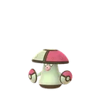
91敗露球菇草毒83.4一般驚嚇特殊打草結欺詐查 IV- 92電擊魔獸電83.4一般電擊特殊冰凍拳瘋狂伏特查 IV
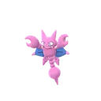
93天蠍地面飛行83.4一般連斬特殊燕返挖洞查 IV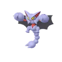
94天蠍王暗影地面飛行83.4一般潑沙特殊地震燕返查 IV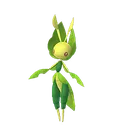
95保母蟲蟲草83.4一般暗影爪限定特殊葉刃十字剪查 IV- 96巨沼怪水地面83.4一般泥巴射擊特殊加農水砲限定污泥攻擊查 IV
- 97風妖精草妖精83.4一般妖精之風特殊種子炸彈月亮之力查 IV
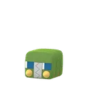
98蟲電寶蟲電83.3一般伏特替換限定特殊十字剪放電查 IV- 99搖籃百合暗影岩石草83.3一般種子機關槍特殊岩石封鎖打草結查 IV
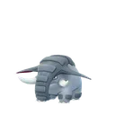
100頓甲暗影地面83.3一般擲泥特殊起草泰山壓頂查 IV
超級速成盃：超級聯盟版常見問題
超級速成盃：超級聯盟版的規則是什麼？
寶可夢 CP 必須在 1,500 以下。可以使用超級進化寶可夢。僅限使用「黃昏之旅」賽季期間（2026/9/9 04:00～12/2 05:00，台灣時間）捕捉到的寶可夢。不可使用幻之寶可夢。
超級速成盃：超級聯盟版什麼時候開放？
第 28 季（黃昏之旅）的開放時間（台灣時間）：11/25（三）05:00～12/2（三）05:00。實際以遊戲內與官方公告為準。
這份排名的分數怎麼來的？
分數來自 PvPoke 的對戰模擬：只用符合超級速成盃：超級聯盟版規則的寶可夢，讓牠們用推薦招式互相以各種護盾數對打，綜合勝率與表現算成 0～100 的分數。分數越高，代表在這個盃賽越全面，但實戰仍要看隊伍搭配與對手。
這份排名跟官方規則完全一樣嗎？
PvPoke 沒辦法判斷捕捉日期，這份排名是假設本季能捕捉到的寶可夢都能參賽，而且沒有包含超級進化寶可夢；請以自己本季實際抓到的寶可夢為準。
超級速成盃：超級聯盟版要什麼樣的 IV？
盃賽的 IV 排名只跟 CP 上限有關。這個盃賽是 CP 1500，所以 IV 怎麼挑跟超級聯盟完全一樣：攻擊 IV 低、防禦與 HP 高的個體能升到更高等級，總能力值更大。點榜單上的「查 IV」就能查你手上那隻的名次。
「限定」招式是什麼意思？
標「限定」的是限定招式：平常進化或用招式學習器學不到，只能在社群日等特定活動，或用厲害招式學習器學到。如果你的寶可夢沒有這個招式，強度會比排名低。
排名多久更新？
本站每天會多次檢查 PvPoke 的最新排名，前 100 名有變動就自動重新產生這頁，頁首的「資料更新」就是最近一次變動的日期。
找到想練的寶可夢了？
用 PvP IV 排名工具查你手上那隻在 CP 1500 的 IV 排第幾，以及要升到幾級、CP 多少。